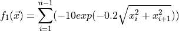
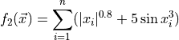
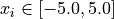
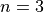
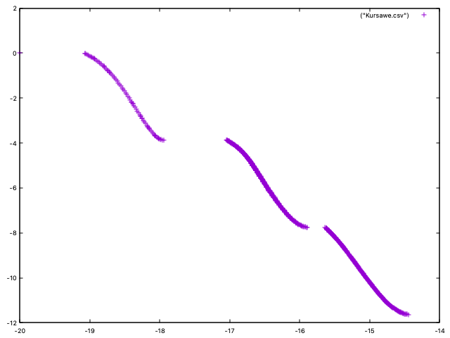

Quick Start
Let us assume that we are interesting in using NSGA-II to optimize problem Kursawe, which has the following formulation:




The problem has two objectives and three decision variables and its Pareto front is disconnected:
{kind=link}
The code to optimize this problem with NSGA-II can be found in class NSGAIIRunner (package
org.uma.jmetal.algorithm.examples.multiobjective.nsgaii, subproject jmetal-algorithm). The first step it to create the problem:
public class NSGAIIRunner extends AbstractAlgorithmRunner {
// Import code
public static void main(String[] args) throws JMetalException, IOException {
String problemName = "org.uma.jmetal.problem.multiobjective.Kursawe";
Problem<DoubleSolution> problem = ProblemFactory.<DoubleSolution>loadProblem(problemName);
// Alternatively:
// Problem<DoubleSolution> problem = new Kursawe()
Then, the crossover, mutation and selection operators are created and configured:
double crossoverProbability = 0.9;
double crossoverDistributionIndex = 20.0;
CrossoverOperator<DoubleSolution> crossover = new SBXCrossover(crossoverProbability,
crossoverDistributionIndex);
double mutationProbability = 1.0 / problem.getNumberOfVariables();
double mutationDistributionIndex = 20.0;
MutationOperator<DoubleSolution> mutation = new PolynomialMutation(mutationProbability,
mutationDistributionIndex);
SelectionOperator<List<DoubleSolution>, DoubleSolution> selection = new BinaryTournamentSelection<>(
new RankingAndCrowdingDistanceComparator<>());
After indicating the popultion size, the algorithm can be instantiated by using the NSGAIIBuilder class:
int populationSize = 100;
NSGAII<DoubleSolution> algorithm =
new NSGAIIBuilder<>(problem, crossover, mutation, populationSize)
.setSelectionOperator(selection)
.setMaxEvaluations(25000)
.build();
The last step is to run NSGA-II, get the result and store the found solutions:
AlgorithmRunner algorithmRunner = new AlgorithmRunner.Executor(algorithm).execute();
List<DoubleSolution> population = algorithm.getResult();
printFinalSolutionSet(population);
By the default, the solutions (Pareto set approximation) and their corresponding function values (Pareto front approximation) are stored in two CSV files called VAR.csv and FUN.csv respectively. When plotting the FUN.csv, the result should be similar to this image: